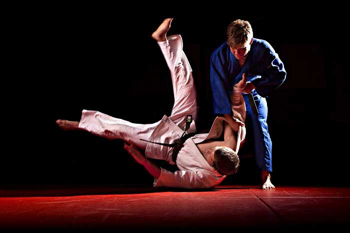

-Judo sporu, mücadelenin iki safhadan oluştuğunu varsayar. Ayakta Tachi-waza ve yerde Ne-waza safhası.
-İlgilerine göre bazı Judoka'lar bir safhada diğerine göre daha üstünken, birçok Judoka (Judocu) her iki safhaya da eşit ağırlık verir.
-Ayaktaki safha başlangıç safhası olarak kabul edilen safhadır, rakipler birbirlerini yere atmaya çalışırlar. Rakibi,
ayaktayken sırt üstü düşürmek maçı (İppon-Tam puan ile kazanmaktır).Rakibini tam sırt üstü olarak değil ,yan tarafı üzerine düşürmek ise Judokaya Wazari puanı kazandırır.

-İki Wazari puanı alan Judoka müsabakayı Wazari Awasate İppon ile kazanır.2 Wazari= İppon .Bu durumda, İppon'u 10 puan olarak kabul
edersek Wazari 5 puan, iki Wazari toplam 10 puan olarak kabul edilebilir.
-Yer safhasında ise rakibini belirlenen süre içerisinde, yerden kalkamayacak şekilde sabit tutarak(Osaeokomi-Waza) puan alma safhasıdır.
-Yere atış sonrasında ise 20 saniye tutuş yapılırsa, İppon-Tam puan ile maç kazanılır. Eğer daha önce bir Wazari puanı
kazanılmış ve akabinde yerde Oseakomi yani tutuş yapılmışsa bunun süresi 10 saniyedir.
-Ayakta rakibini yere atarak puan alma şekilleri, İppon ve Wazari adı altında Japonca terimlerle ifade edilir.
-Ceza puanı olarak yine Japonca bir terim olan Shido kullanılır.Üç Shido alan müsabık Hansoku Make yani diskalifye ile müsabakayı kaybeder.